Годинник-інформер на ESP32
Незалежна прошивка для саморобного годинника на ESP32 і світлодіодних матрицях MAX7219: час, погода, новини, курси валют, датчики, підсвітка WS2812B, голос щогодини, MQTT і Home Assistant. Заснована на прошивці Clock Informer 2.7.1 автора Semen_p: вихідний код опубліковано повністю, помилки виправлено, додано нові функції, оновлення приходять лише з цього проєкту.
Прошити з браузера Інструкція користувача Документація Завантаження Вихідний код
Навіщо цей проєкт
Головна причина — вихідний код прошивки Clock Informer не опублікований. Автор поширює прошивку безкоштовно, але лише готовими файлами (.bin), тож власник годинника не може сам змінити її чи виправити помилку: доводиться чекати, поки її виправить автор, а якщо автор її не виправляє — миритися з нею.
Тут вихідний код прошивки 2.7.1 відтворено з її машинного коду й опубліковано повністю, з поясненнями (як саме). Тепер прошивку можна самому зібрати, змінити й виправити, не чекаючи нікого.
Чим відрізняється від оригіналу
- Окремий проєкт. Власна назва й нумерація версій (1.x); перевірка оновлень, файли оновлення, мовні пакети, історія змін, звуки й корпуси — з цього репозиторію, а не з сервера автора. Прошивки цього проєкту не з'являються в оригінальному проєкті, а оригінальні — тут.
- Виправлено: зависання без інтернету й «годинник не видно в мережі», обриви Wi-Fi, голос щогодини, що не називав час, кнопку, що не вимикала будильник, табло, що світило вночі після повідомлення, літній час, що не перемикався, старий інтерфейс із кешу браузера, зайві точки при зміні години, паролі Wi-Fi у консолі та інше — повний перелік.
- Нове: стан запуску на табло (значок і напис, і на двох поверхах), плавна яскравість за датчиком світла, нічна тиша (без завантажень, поки табло погашене), літній час «Авто» за правилами ЄС, час після перезапуску без інтернету, налагодження по Wi-Fi, запис причин аварій у журнал, сторож головного циклу.
- Той самий годинник і та сама схема: перехід із прошивки автора зберігає всі налаштування.
Підключення

Таблиця виводів, живлення, два поверхи матриць, датчики — докладно про підключення.
Автор оригіналу
Годинник Clock Informer створив Semen_p: сторінка проєкту на Thingiverse (корпуси, схема, опис), goldart.ee, підтримати автора — ko-fi.com/clockinformer. Informer Clock UA — незалежне продовження, не пов'язане з автором і не підтримуване ним; з питаннями щодо цієї прошивки звертайтеся сюди, а не до автора.
Ліцензія — CC BY-NC 4.0, як в оригіналу: можна копіювати й змінювати із зазначенням автора, але не з комерційною метою.
An information clock on ESP32
Independent firmware for the DIY clock on ESP32 and MAX7219 LED matrices: time, weather, news, exchange rates, sensors, WS2812B backlight, hourly voice, MQTT and Home Assistant. Based on the Clock Informer 2.7.1 firmware by Semen_p: full source code published, bugs fixed, new features added, and updates come only from this project.
Flash from the browser User manual Documentation Downloads Source code
Why this project exists
The main reason: the source code of the Clock Informer firmware is not published. The author distributes the firmware for free, but only as ready-made files (.bin), so a clock owner cannot change it or fix a bug themselves: they have to wait for the author to fix it, and if the author doesn't, put up with it.
Here the source code of firmware 2.7.1 has been reconstructed from its machine code and published in full, with explanations (how). Now you can build, change and fix the firmware yourself without waiting for anyone.
How it differs from the original
- A separate project. Its own name and version numbers (1.x); update checks, update files, language packs, change history, sounds and cases come from this repository, not from the author's server. Firmware from this project never shows up in the original project, and the original firmware never shows up here.
- Fixed: hangs without internet and “the clock is not visible on the network”, Wi-Fi drops, the hourly voice not saying the time, the button not stopping the alarm, the display staying on at night after a message, summer time not switching, an old interface from the browser cache, stray dots when the hour changes, Wi-Fi passwords in the console and more — full list.
- New: start-up status on the display (icon and text, also on two floors), smooth light-sensor brightness, night quiet (no downloads while the display is off), “Auto” summer time by EU rules, time after a restart without internet, Wi-Fi debugging, crash causes in the event log, a main-loop watchdog.
- Same clock, same wiring: switching from the original firmware keeps all settings.
Wiring

Pin table, power, two floors of matrices, sensors — wiring in detail.
Original author
Clock Informer was created by Semen_p: project page on Thingiverse (cases, schematic, description), goldart.ee, support the author at ko-fi.com/clockinformer. Informer Clock UA is an independent continuation, not affiliated with or supported by the author; please ask about this firmware here, not the author.
License: CC BY-NC 4.0, same as the original: you may copy and modify it with attribution, but not for commercial purposes.